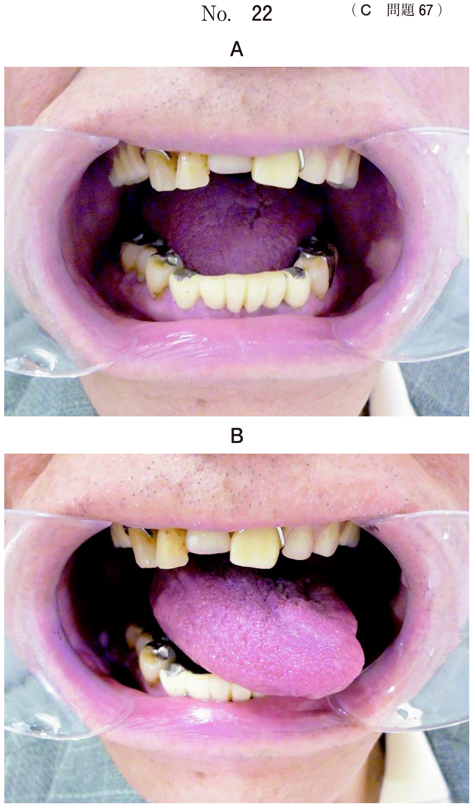
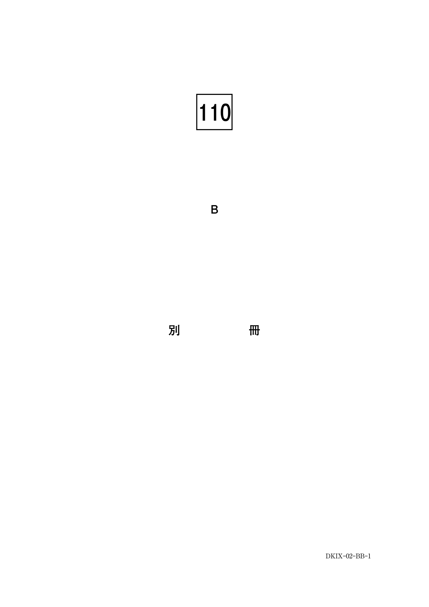

歯髄炎は急性と慢性に大別され、さらに病態によって細分類される。
| 種類 | 病態 | 臨床症状 |
|---|---|---|
| 急性単純性 （漿液性） |
リンパ球主体の軽度炎症 細菌感染前の初期段階 |
一過性疼痛（数秒〜1分） 自発痛なし |
| 急性化膿性 | 好中球浸潤・膿瘍形成 細菌感染あり |
自発痛、拍動性疼痛 温熱痛、閾値上昇 |
| 急性壊疽性 | 化膿性＋腐敗菌感染 | 自発痛 髄室開放で腐敗臭 |
| 種類 | 病態 | 臨床症状 |
|---|---|---|
| 慢性潰瘍性 | 自然露髄、潰瘍形成 内圧上昇が抑制 |
自覚症状少ない 探針で激痛・出血 |
| 慢性増殖性 | 歯髄ポリープ（息肉）形成 乳歯・根未完成歯に多い |
キノコ状の鮮紅色息肉 咬合痛、出血 |
| 慢性閉鎖性 | 大きな齲窩あるが露髄なし | ほぼ無症状 |
温度診への反応は生活歯髄の存在を示す。
| 反応 | 疾患 |
|---|---|
| 反応あり | 歯髄充血、急性単純性歯髄炎、急性化膿性歯髄炎 |
| 反応なし | 歯髄壊死、歯髄壊疽、根尖性歯周炎 |
35歳の男性。上顎右側第一大臼歯の自発痛を主訴として来院した。2か月前から食片圧入があり、昨夜から拍動性の疼痛と温熱痛を自覚しているという。歯髄電気診で閾値の上昇がみられた。初診時の口腔内写真（別冊No.32A）とエックス線画像（別冊No.32B）を別に示す。
考えられる診断名はどれか。1つ選べ。

【解説】自発痛・拍動性疼痛・温熱痛・歯髄電気診で閾値上昇（反応あり）という所見から急性化膿性歯髄炎と診断できる。歯髄充血や単純性は自発痛がない。慢性潰瘍性は自覚症状が少ない。根尖性歯周炎は歯髄電気診で無反応となる。
72歳の男性。下顎左側臼歯部の食事時の痛みを主訴として来院した。半年前に修復物が脱落し、そのままにしていたという。自発痛と打診痛はない。窩底を探針で探ると激しい痛みとわずかな出血を認めた。初診時の口腔内写真（別冊No.1A）とエックス線写真（別冊No.1B）を別に示す。
考えられるのはどれか。1つ選べ。

【解説】自発痛・打診痛なしで、探針で激痛と出血という所見は慢性潰瘍性歯髄炎に典型的。露髄があり、探針が歯髄に触れることで激痛が生じる。急性化膿性は自発痛あり。増殖性は息肉（ポリープ）形成。閉鎖性は露髄なし。
急性壊疽性歯髄炎にみられるのはどれか。2つ選べ。
【解説】急性壊疽性歯髄炎は急性化膿性歯髄炎に腐敗菌が混合感染したもの。自発痛と髄室開拡時の腐敗臭が特徴。歯髄電気診で無反応となるのは歯髄壊死・壊疽であり、「壊疽性歯髄炎」はまだ一部生活歯髄が残存している段階のため反応することもある。瘻孔・動揺度増加は根尖性歯周炎の所見。
定型発達の4歳児の歯髄疾患において温度診への反応があるのはどれか。2つ選べ。
【解説】温度診への反応は生活歯髄の存在を示す。歯髄充血と急性化膿性歯髄炎は生活歯髄であり反応あり。壊死・壊疽は歯髄が死んでおり反応なし。根尖性歯周炎も歯髄壊死後の疾患であり反応なし。